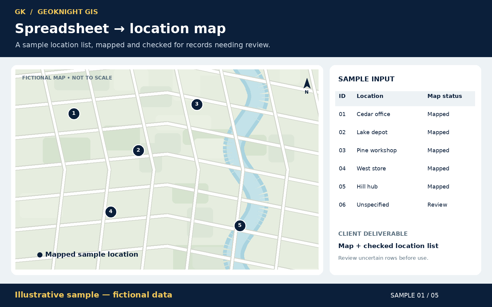
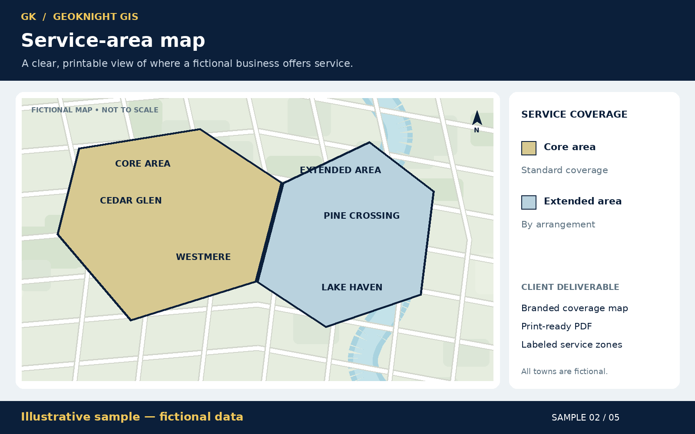
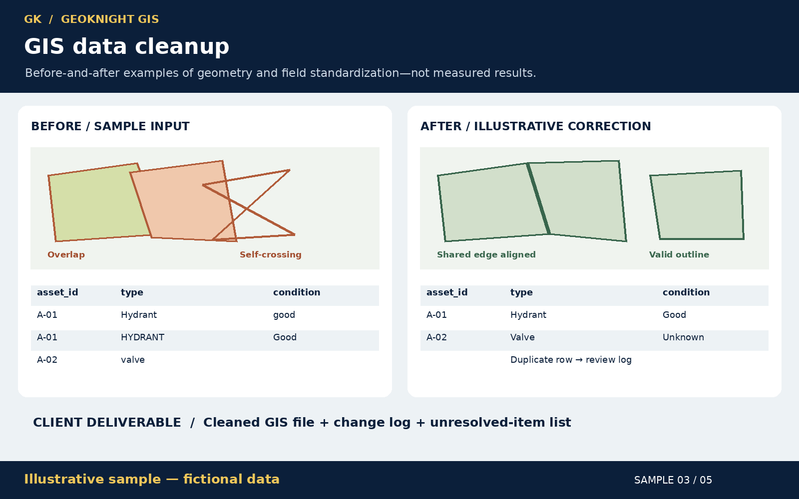
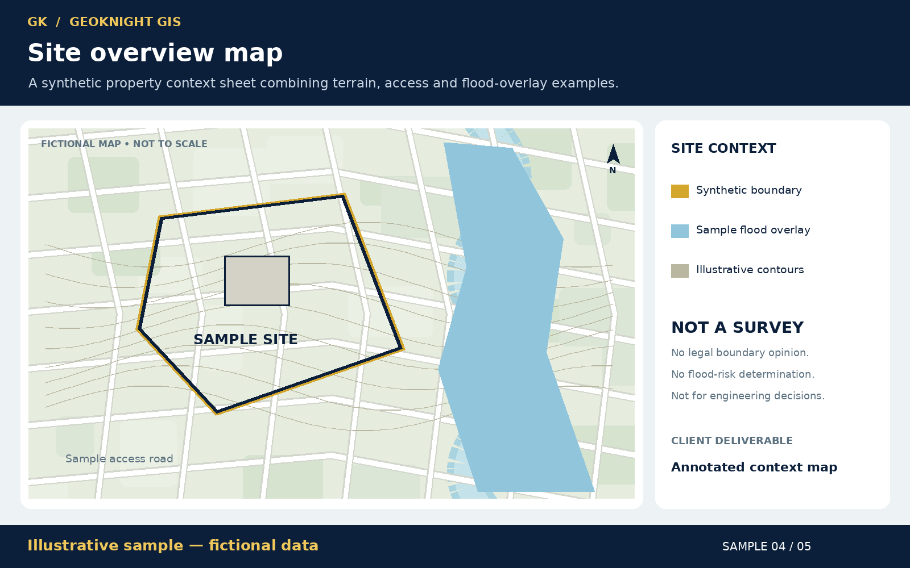
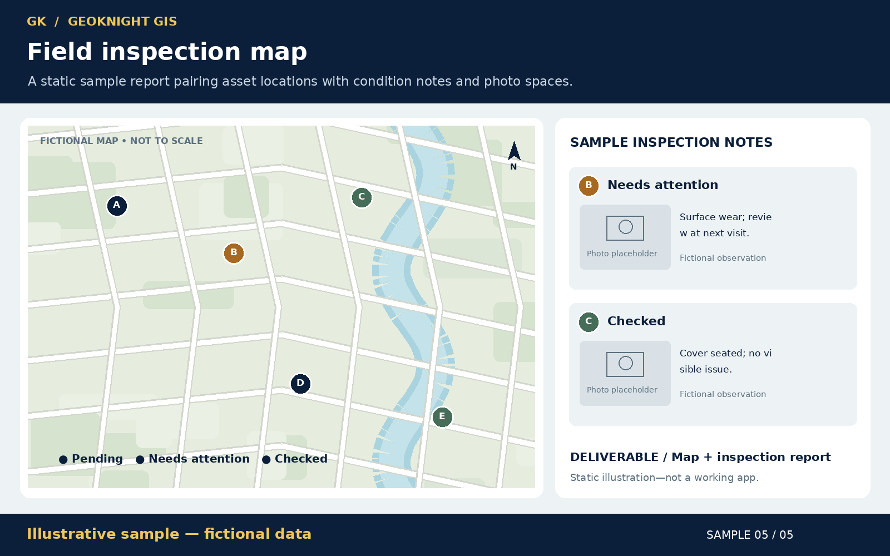

Illustrative sample — fictional data
Spreadsheet to location map
A location list shown as points on a map, with a sample row left marked for review. The picture is the deliverable: a map plus the checked list.


Illustrative samples — fictional data
Five static pictures of ordinary map and data deliverables. These are examples of what the finished picture can look like. They are not client projects, not measured results, and not working tools.
Illustrative sample — fictional data
A location list shown as points on a map, with a sample row left marked for review. The picture is the deliverable: a map plus the checked list.

Illustrative sample — fictional data
A printable coverage sketch with a core area and an extended area. The town names on the picture are made up.

Illustrative sample — fictional data
A before-and-after sketch of messy shapes and inconsistent table values, next to a tidier drawing and a duplicate row sent to a review note. The picture says these are examples, not measured results.

Illustrative sample — fictional data · Not a survey
A synthetic site sheet with a sample boundary, an access road, illustrative contours, and a sample flood overlay. Not a survey: no legal boundary opinion, no flood-risk determination, and not for engineering decisions.

Illustrative sample — fictional data
A static sheet that pairs sample points with condition notes and empty photo placeholders. It shows the layout of a report. It is not a working inspection app.
